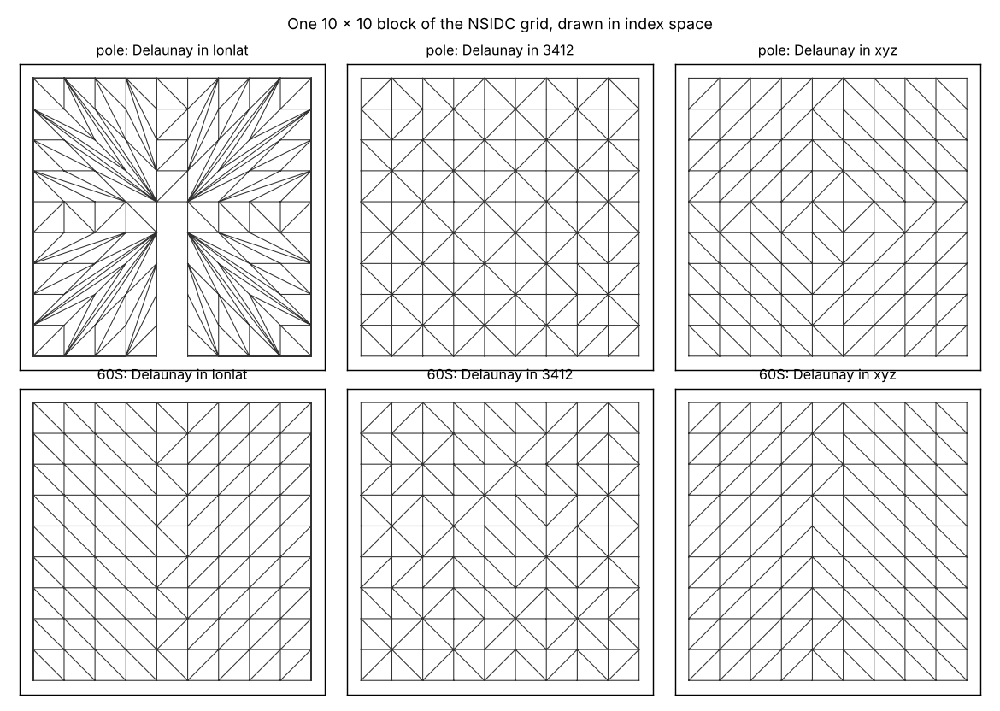

trianglewins / grids
Grids as meshes: Delaunay in what?
A gridded dataset is a mesh that never had to say so. This page is about where grids and triangulations meet, and about one question they share. The companion book Regular in what? argues that a grid is regular, rectilinear or curvilinear only in a frame. A triangulation is Delaunay, has straight edges and interpolates linearly only in a frame too. "Delaunay in what?" is the same question.
Every logically rectangular grid is already a mesh
A regular, rectilinear or curvilinear grid has an (i, j) index, and the index gives the topology for free: each cell is a quad, its corners are the vertices, and neighbours are i + 1 and j + 1. Turning that into triangles needs no Delaunay at all. Split each quad into two triangles, and the only choice is the diagonal.
The diagonal matters. Bilinear interpolation in a cell is not linear on either pair of triangles, and the two splits give different values at the cell centre (see notes). A split is a choice to record, not a detail to leave to the mesher.
Where the values sit changes which mesh you have. Values at cell corners (PixelIsPoint, a DEM read as heights) are a field on the mesh's nodes. Values as cell averages (PixelIsArea) are a field on its faces. The grid words "centre" and "corner" are the mesh words "face" and "node".
Delaunay in what?
Triangulate the points of a grid instead of splitting its cells, and the index is thrown away. What comes back depends on the frame the mesher saw. The figure takes one 10 x 10 block of the NSIDC 25 km south polar stereographic grid (EPSG:3412, regular in that frame), triangulates the cell centres three ways, and draws every result in the grid's own index space:
- in longitude and latitude, treated as planar x and y;
- in EPSG:3412, the grid's native frame;
- in geocentric xyz, as the convex hull of unit vectors, which is the spherical Delaunay triangulation (see notes).

| Block | Frame | Triangles | Inside one cell | Same as xyz |
|---|---|---|---|---|
| around the pole | lonlat | 182 | 31% | 3% |
| 3412 | 162 | 100% | 56% | |
| xyz | 162 | 100% | 100% | |
| near 60S | lonlat | 186 | 87% | 4% |
| 3412 | 162 | 100% | 52% | |
| xyz | 162 | 100% | 100% |
"Inside one cell" counts triangles whose three vertices lie in one index cell, that is, halves of a grid quad. A 10 x 10 block has 81 cells and so 162 halves.
Three things show up.
- Longitude and latitude is the wrong frame, badly near the pole. Around the pole the block's longitudes run all the way round, the antimeridian cuts it open, and most triangles fan across many cells. Near 60S every quad half is there, but the block is not convex in longitude and latitude, so 24 extra sliver triangles fill in its concave edges.
- The native frame and the sphere agree on the cells. In EPSG:3412 the cells are squares; on the sphere they are nearly squares. Both give exactly one pair of triangles per cell.
- They do not agree on the diagonals, and neither is wrong. The four corners of a square are on one circle, so both diagonals are equally Delaunay. Stereographic projection maps circles on the sphere to circles on the plane, so the tie survives on the sphere as well. Which diagonal each run picked is decided by rounding, which is why "same as xyz" is about half. This is the diagonal choice from the previous section, arriving uninvited.
A regular grid can be recovered by finding the frame it is regular in. A triangulation built in the wrong frame cannot: it is simply a different triangulation. So for meshes the frame is a decision made before meshing, not bookkeeping added afterwards.
The figure and numbers come from survey/grids/figures.py (numpy, scipy, matplotlib, pyproj).
What survives a change of frame
| Property | Survives a transform? |
|---|---|
| connectivity (which triangles touch) | yes |
| regular, rectilinear, curvilinear | sometimes: a grid can be regular in another frame |
| straight edges | no: straight in one frame is curved in another (curves) |
| Delaunay (empty circumcircle) | no, except under circle-preserving maps such as stereographic |
| area and angle bounds | no: in longitude and latitude they are in degrees |
| linear interpolation | no: barycentric weights are linear in the mesh's coordinates |
Topology survives; geometry does not. Transforming a mesh keeps its triangles and is lossless. Claims about their shape have to be made again in the new frame.
Where else grids and triangles meet
Inverting a curvilinear grid. Finding which cell of a curvilinear grid contains a point is a point location problem. The grid's own triangulation (quads split, in the target frame) answers it directly: find the triangle, and its barycentric weights give fractional (i, j). That is a triangulation whose vertices carry their index as an attribute, which is exactly what the harness's attribute carry check measures.
Reprojection meshes. GDAL's approximate transformer and the browser raster reprojectors (deck.gl-raster, OpenLayers) build an error-bounded triangle mesh in the target projection. New vertices there should be evaluated through the transformation, not interpolated from the triangle they fall in, and rims, poles and seams are better inserted as constraints than found by refinement (notes).
Swaths. Satellite swaths and tripolar ocean grids are curvilinear in every frame, so there is no frame to retreat to. Triangulate them in geocentric xyz, or in a local projection per scene.
Discrete global grids. Icosahedral grids start from 20 spherical triangles, HEALPix and the cubed sphere from quads, and their vertices and neighbours are computed from the cell id. They are meshes whose triangulation is a formula, as a regular grid is a curvilinear grid whose positions are a formula.
Coverages. The harness cases
grid3_doubled and grid3_dedup are a 3 x 3
regular grid written out as polygons, with shared edges given twice or
once. Recovering those shared edges is work a mesher has to do, and work
the grid never needed: its identity was computed from the index.